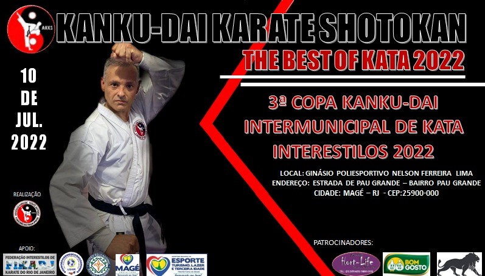

O QUE É PRECISO SABER...?
O objetivo fundamental da arte do Karatê não consiste na vitória ou na derrota, mas no aperfeiçoamento do caráter de seus praticantes.
- Gichin Funakoshi
Próximo evento
E ai, quer ser um samurai também?
Abaixo encontra-se o endereço do nosso dojo, você está convidado a vir treinar conosco, basta clicar em Ver mapa maior, e você será redirecionado para o google maps!